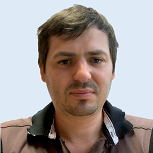
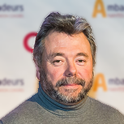
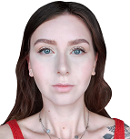
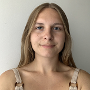
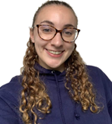
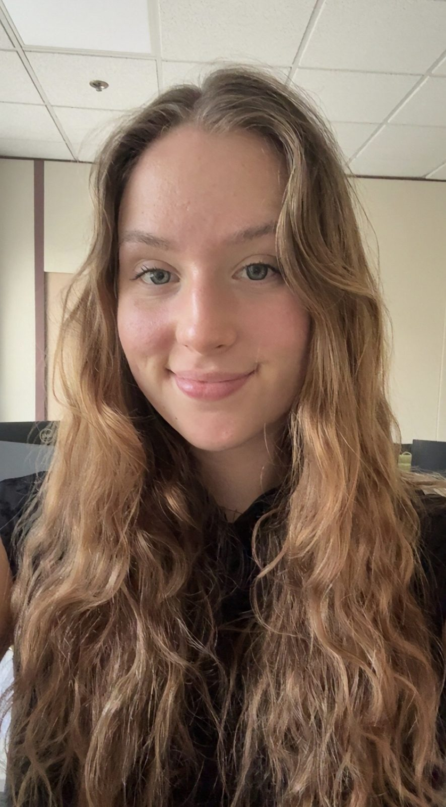

NanoBioMat / Team
People & supervision
The researchers, staff and doctoral projects contributing to NanoBioMat.
Permanent staff
Lénaïc Lartigue

Position: Associate Professor in Chemistry
Role: Magnetic nanoassemblies, iron oxide nanoparticles and nanomedicine.
Jean-Michel Bouler

Position: Professor in Chemistry
Role: Biomaterials development and innovation processes.
Nathalie Guichard
Position: CNRS Technician
Role: Physicochemical characterization of magnetic nanoassemblies and biomaterials.
Doctoral projects
Anna Hlukhaniuk

Period: 2023–2026
Project: Magnetic prooxidant-modified polysaccharide-based nanocomposites for multimodal cancer treatment.
Context: PhD in co-supervision with the Institute of Macromolecular Chemistry, Prague.
Léa Ponroy

Period: 2024–2027
Project: Magnetic/photosensitizer nanoassemblies for cancer phototherapy.
Context: PhD project developed in collaboration with the Institut des Sciences Chimiques de Rennes.
Marie-Léa Lalanne

Period: 2024–2027
Project: Magnetic nanoparticles for targeted therapy of liver cancer.
Context: PhD project focused on magnetic nanomedicine for hepatic cancer.
Célia Rohmer

Period: 2026–2029
Project: Magnetically activatable nanoassemblies for targeted immunomodulation of autoimmune hepatitis.
Context: PhD focusing on nanoassembly formulation, physicochemical characterization and interactions with biological environments.
Former PhD students
Joanna Boucard
Defense: 2018
Project: Magnetofluorescent nanomaterials for multimodal bioimaging and drug delivery. (new tab)
Marina Coupeau
Defense: 2022
Postdoctoral projects
Caroline Dessal
Period: 2020–2021
Project: Iron oxide nanoassemblies for biomedical research.
Sarra Ben Hassine
Period: 2022–2023
Project: Coupling of magnetic nanoparticles in nanometric 3D arrays for magnetic fluid hyperthermia.